SAPNDA
Contributing components to the DNA Web UI Kit
The DNA Web UI Kit is the shared Figma library designers use across SAP Business Data Cloud (BDC), SAP Analytics Cloud (SAC), and Datasphere (DSP). Working with the design system team, I designed, rebuilt, and documented components for the kit, focusing on consistency across products and on making components flexible enough that designers don't need to detach them. I also helped the team start building from the kit with Claude. This project is under NDA, so details shared here are intentionally high-level.
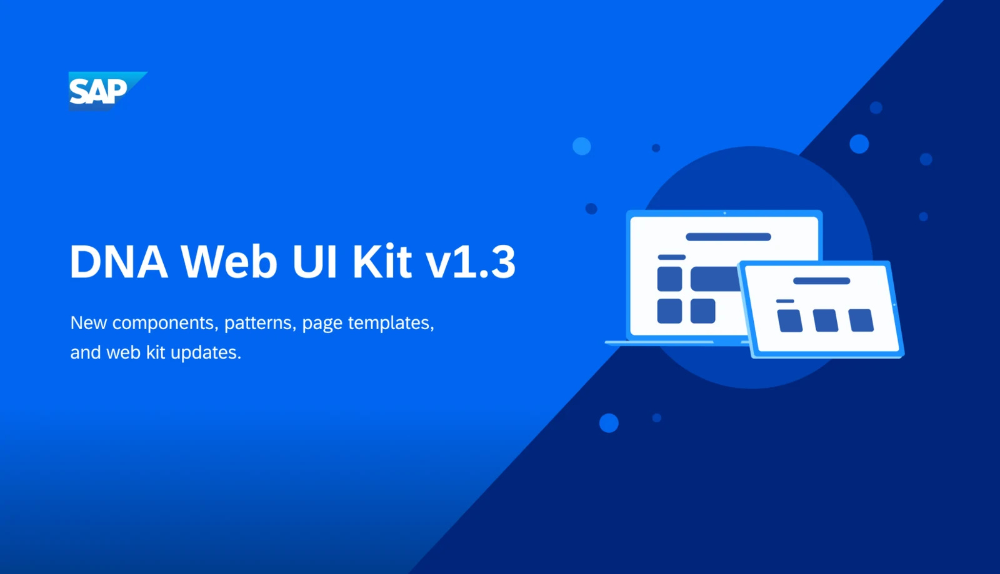
context
One UI kit behind three products. Every gap shows up everywhere.
SAC, Datasphere, and Business Data Cloud are designed from the same UI kit, which builds on SAP's Fiori guidelines and UI5 component library. When a component is missing, inconsistent, or too rigid, designers on each product work around it in their own way, and the products drift apart.
I spent six months on the design system team, working alongside the kit owners and taking components from requirements through design, specs, review, and documentation.
problem
Components that drifted between products, or pushed designers to detach them.
The same component could look different depending on the product. Creation items in BDC used different color tokens and corner radius than the ones in SAC and Datasphere. Some toolbars used custom page switchers that weren't part of the design system at all. And components like the Switch Group couldn't hold more items, so designers detached them to add more, which breaks the link to the library and lets future updates pass them by.
goals
Consistent across products, flexible enough to use as is, and accessible by default.
Each contribution had the same goals: one spec shared by all three products, properties and slots that cover real use cases so designers never need to detach, accessibility annotations built in, and documentation clear enough for any designer to use the component correctly.
process
Creation Item: one spec across three products
Creation items are the large "Create" tiles users see when starting something new. I rebuilt the base set so all three products share one spec, with the same tokens, a 16px corner radius, and BDC variants, and added accessibility annotations.
Two questions came up along the way. On color, I learned the item colors are chosen to stand apart at a glance, not to look harmonious, so I wrote rules for assigning them into the guidance. On keyboard navigation, UI5 and the Fiori keyboard guidelines disagreed on what the up and down arrows should do. I raised it with the DNA accessibility advocates, and we landed on left and right moving through items in order, with up and down moving between rows.
I also wrote the usage documentation, covering when to use it, anatomy, accessibility labels, and color rules. It recommends putting "Create" inside each label, as BDC does, so screen reader users know what each item does as they tab through.
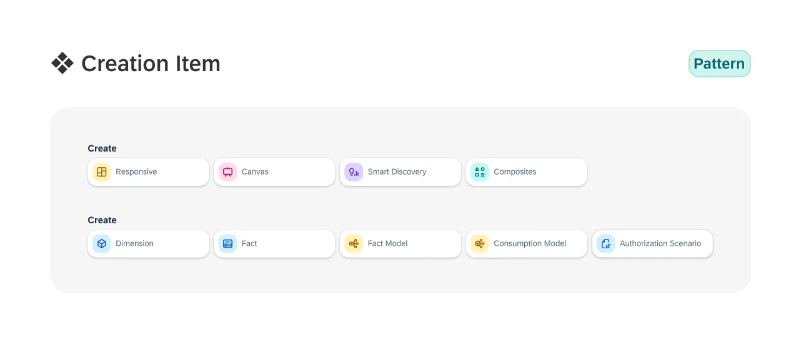
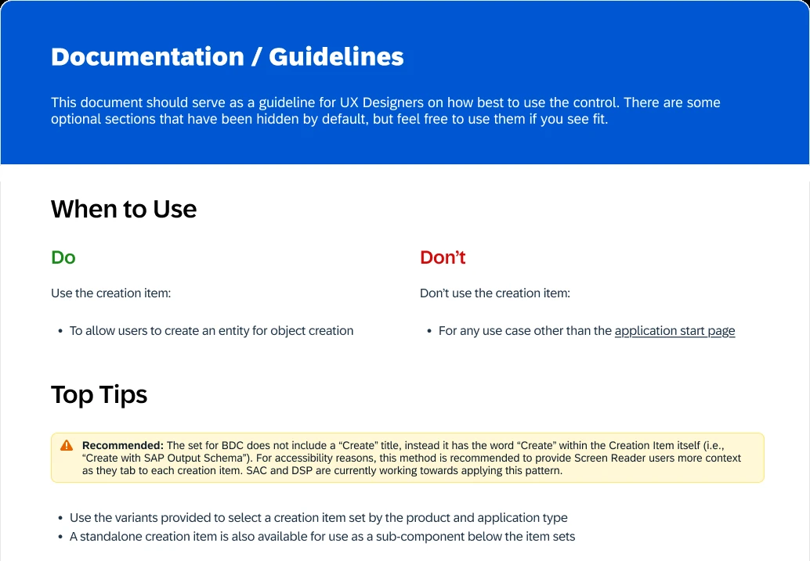
Part of the usage documentation
Page Switcher: deciding whether to build at all
Some toolbars had their own custom pagination. Before designing anything, I collected every instance across the products and asked the kit owners whether designers should reuse the existing pagination component or whether the kit needed something new. We agreed on a Page Switcher subcomponent, which I designed and documented, including rules like disabling the left arrow on the first page.
Switch Group: designing so designers don't detach
Designers were detaching the Switch Group whenever they needed more switches. I rebuilt it with slots so a group can hold more switches, and added a guideline showing how to extend it without detaching.
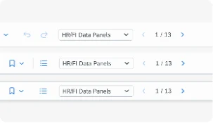
Page Switcher in the app toolbar
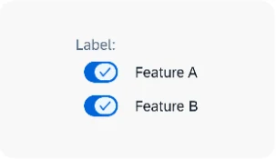
Switch Group, rebuilt with slots
Both shipped in v1.3 of the kit.
System Information Bar: from hard-coded colors to tokens
The System Information Bar tells users which system they're in, such as test, development, or production, with a color customers can choose. In both SAC and Datasphere those colors were hard-coded hex values, so they didn't follow the theme and fell short of SAP's consistency standards.
I mapped every bar color to a theming token and presented the old hex approach next to the new one. The same colors carry through to the browser tab icon, so the tab and the bar always match. I also worked with the user assistance team on the label wording, and once the spec was approved, the component was added to the DNA Web UI Kit.
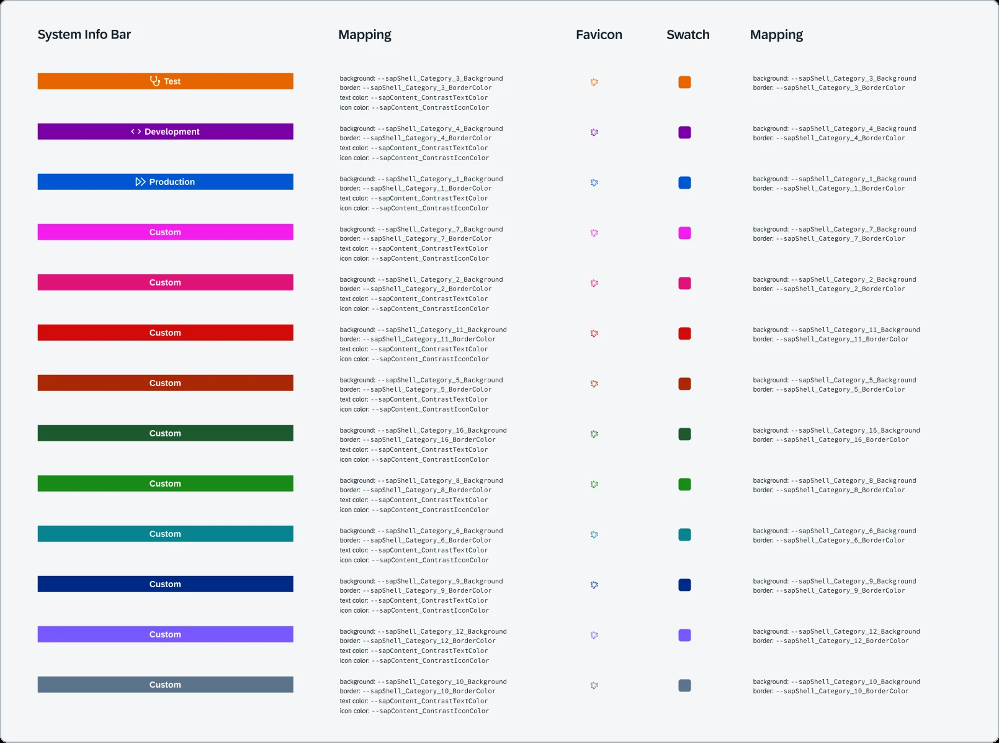
Every bar color mapped to a theming variable
Smaller contributions
I also rebuilt the BDC App Start Page from SAC components, with interchangeable table and toolbar subcomponents, and designed new chart icons, including a sunburst chart, stream graph, and word cloud.
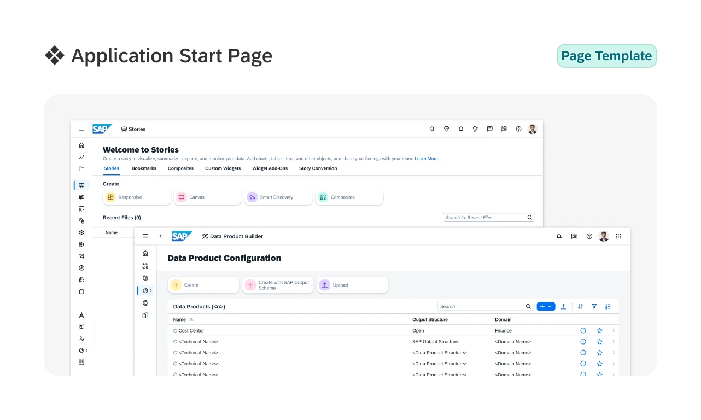
BDC App Start Page, rebuilt from SAC components
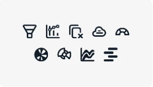
New chart icons
ai workflow
Helping the team build from the kit with Claude.
Alongside the components, I explored how designers could use Claude with Figma to build from the DNA Web UI Kit, noting down which prompts and setups produced consistent results.
Claude Code and Figma MCP setup video
Ahead of the workshop, I screen-recorded the entire installation from start to finish, then edited it into a setup video designers could follow along with on their own machines. The goal was for everyone to arrive with Claude already installed and connected to Figma. The video was shared with our design team and with designers on another team, and the feedback from both was positive.
Claude x Figma workshop
In April 2026, I co-ran a Claude Code x Figma workshop, "From Prompt to Prototype," for 20 to 30 designers, both in person and online. The session covered how Claude connects to tools like Figma through MCP, basic prompting techniques, a hands-on design challenge, and best practices, followed by an open discussion. Not everyone had set up beforehand, so we took time out of the session to help them install it. I helped prepare the agenda, recorded the session, and edited the recording so the team could rewatch it.
The workshop also traveled. SAP's Design Hub in Walldorf, Germany adopted it and ran it three more times in May and June 2026 for designers across teams. Nearly every registered participant attended each session, every session had a waiting list, and colleagues at other locations asked for sessions of their own.
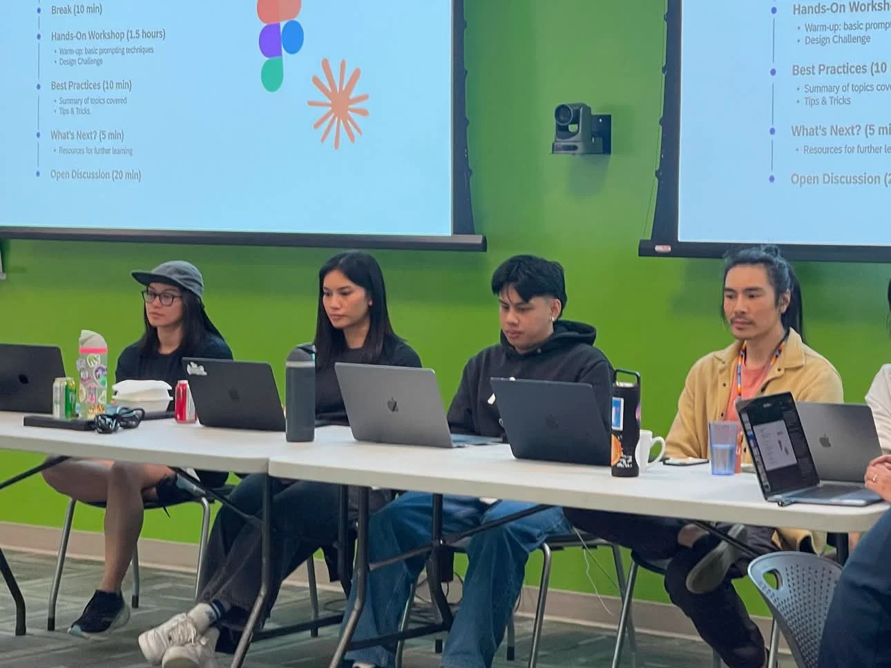
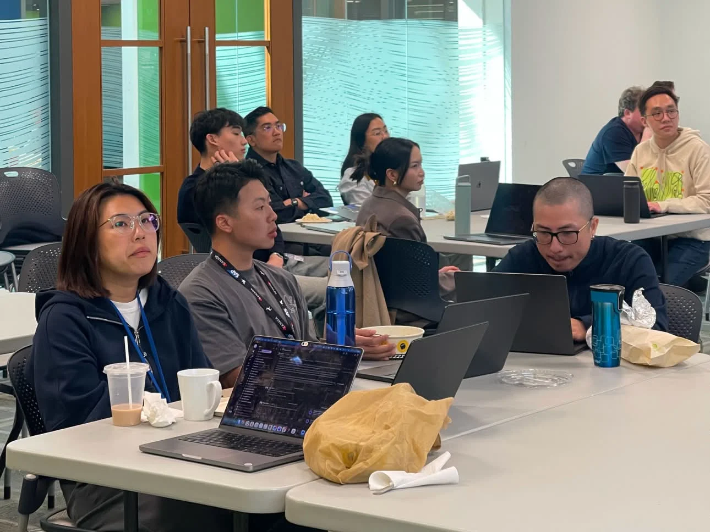
From Prompt to Prototype: Claude Code x Figma
Claude DNA Quick Start Guide
After the workshop, three of us wrote a Quick Start Guide that takes designers from installing Claude to their first working session in five steps. I focused on the first two: what you'll set up, and running the setup script. It sits alongside beginner guides on the terminal, Claude Code, and MCP servers.
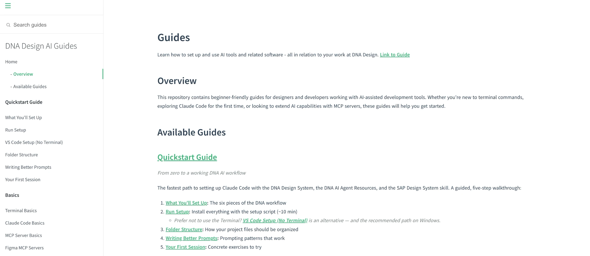
outcome
Six contributions to the kit, shared across three products.
Creation Item, Page Switcher, Switch Group, App Start Page, System Information Bar, and a set of chart icons, each specced and documented for designers across SAC, Datasphere, and BDC. Page Switcher and Switch Group shipped in v1.3 of the kit. Alongside the components, I made a setup video, co-ran a workshop for 20 to 30 designers that SAP's Design Hub in Walldorf went on to run three more times, and helped write a Quick Start Guide for building from the kit with Claude. Full case study details are available on request.
reflections
Designing for designers
My users on this project were other designers. A component that technically works but gets detached has failed, so I started asking "what will someone need to change here?" before deciding on properties, variants, and slots.
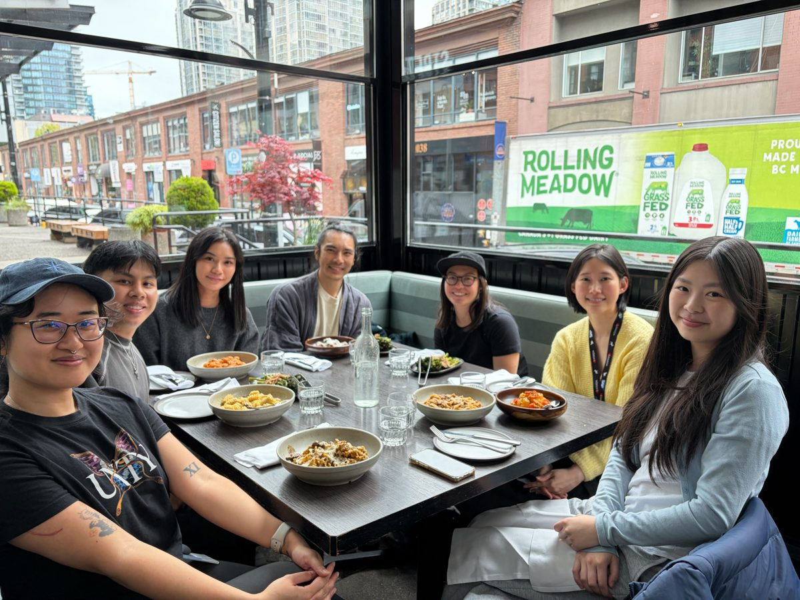
Hybrid sessions split your attention
People joining online ran into setup issues too, but stopping the workshop to help them meant pausing for everyone in the room. It was hard to support both groups at once. For future hybrid sessions, I'd have one facilitator dedicated to the online attendees.
Consistency comes from the spec, not the screenshot
Two components can look nearly identical and still drift apart over time if they use different tokens underneath. Aligning tokens, corner radius, and naming was less visible than a redesign, but it's what keeps three products in sync.